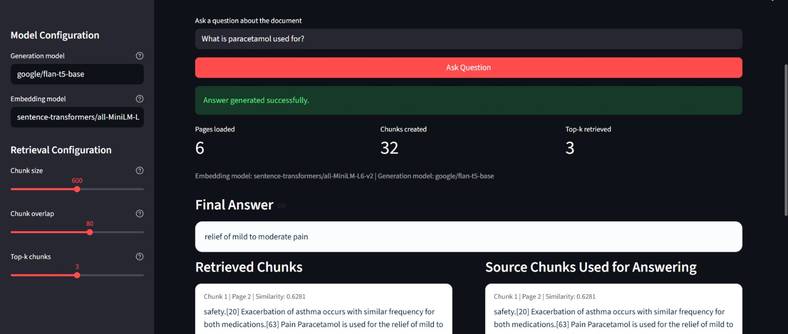
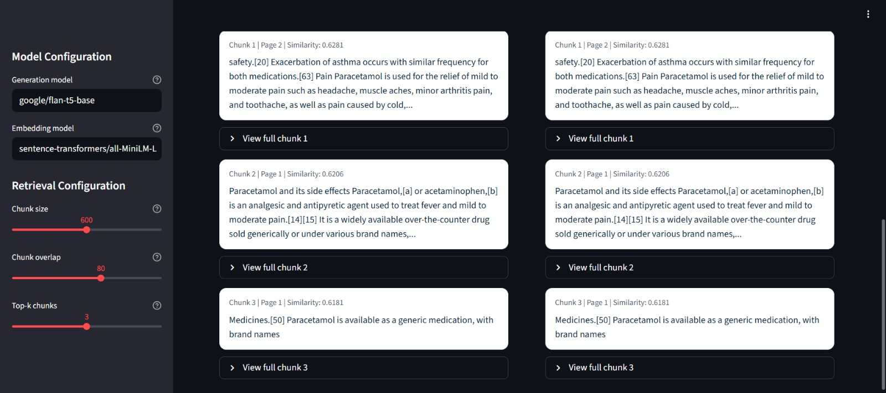

Abstract
This project presents a Retrieval-Augmented Generation (RAG) based question answering
system designed for querying a PDF document about Paracetamol. Traditional question
answering systems often hallucinate or respond from general model memory without grounding
the answer in the source material. To address this, the proposed system combines semantic
retrieval and local language generation so that answers are produced only from the document
context selected at runtime.
The application accepts a PDF file through a Streamlit interface, extracts text using a PDF
loader, splits the content into overlapping chunks, transforms the chunks into embeddings
using sentence-transformers/all-MiniLM-L6-v2, and stores the embeddings in a
FAISS vector index. When the user enters a question, the system retrieves the top relevant
chunks and passes them to a LangChain RetrievalQA chain backed by a local
sequence-to-sequence model, google/flan-t5-base, to generate a grounded answer.
The implemented system supports configurable chunk size, chunk overlap, and retrieval depth,
and also displays the retrieved chunks, source chunks, and similarity scores for
transparency. The result is a compact, explainable, and domain-focused document question
answering pipeline suitable for educational and informational use.
Introduction
Large language models are effective at generating natural language responses, but their
answers are not always anchored to a trusted source. In document-centric tasks, especially
when users need precise information from a particular file, retrieval becomes necessary.
Retrieval-Augmented Generation addresses this problem by first finding relevant context from
the source material and then generating an answer constrained to that context.
In this project, the target document is a PDF related to Paracetamol. The goal is to allow a
user to ask natural language questions such as the uses, dosage notes, warnings, or other
details described in the document, and receive answers derived from the uploaded file rather
than from unrestricted model memory.
The implemented system is intentionally grounded: if the answer is not present in the
retrieved context, the prompt instructs the model to respond that the answer is not known
from the provided document.
Problem Statement
Users often need a simple way to query long PDF documents without reading every page
manually. Keyword search is limited because it does not capture semantic similarity and may
miss relevant information expressed in different words. A domain-oriented question answering
system is therefore needed to retrieve semantically relevant content and produce readable
answers with supporting context.
Objectives
- Build a PDF question answering application using a standard RAG pipeline.
- Enable semantic retrieval over Paracetamol document content.
- Generate answers using only retrieved context from the selected PDF.
- Expose retrieved chunks and similarity scores for answer transparency.
- Provide an easy-to-use web interface through Streamlit.
System Architecture
User Question
Streamlit UI
PDF Loader
Chunking
Embeddings
FAISS Retrieval
LLM Answer Generation
Answer + Source Chunks
Technology Stack
| Component |
Technology Used |
Purpose |
| Frontend |
Streamlit |
Interactive web interface for upload, question input, and results display |
| Document Loading |
LangChain Community PyPDFLoader |
Extracts text content page by page from PDF documents |
| Chunking |
RecursiveCharacterTextSplitter |
Splits document text into overlapping semantic segments |
| Embeddings |
sentence-transformers/all-MiniLM-L6-v2 |
Converts document chunks and queries into dense vector representations |
| Vector Store |
FAISS |
Stores and searches document embeddings efficiently |
| Generation Model |
google/flan-t5-base |
Produces final natural language answers from retrieved context |
| Orchestration |
LangChain |
Connects retriever, prompt, and local language model into one QA chain |
Project Structure
| File |
Role in the Project |
app.py |
Streamlit interface, configuration controls, question handling, and output rendering |
rag_pipeline.py |
Core RAG logic including loading, chunking, embedding, indexing, retrieval, and answer generation |
utils.py |
Helper functions for file handling, chunk formatting, document identity, and duplicate removal |
data/paracetamol.pdf |
Default knowledge source used when no new PDF is uploaded |
Default Retrieval Setup
Chunk Size: 600
Chunk Overlap: 80
Top-k Retrieval: 3 chunks
Model Setup
Embedding Model: all-MiniLM-L6-v2
Generator: flan-t5-base
Execution: Local CPU-based inference
Methodology and Implementation
1. PDF Ingestion
The system accepts either an uploaded PDF or a default file located at
data/paracetamol.pdf. The PDF is loaded through
PyPDFLoader, which creates page-level documents. The total page count is stored
and later displayed in the interface as part of ingestion metrics.
2. Chunking Strategy
After loading, the text is split using RecursiveCharacterTextSplitter with a
default chunk size of 600 characters and overlap of 80 characters. The splitter prioritizes
separators in the order of paragraph breaks, line breaks, sentence endings, spaces, and
finally character-level fallback. This preserves meaning while limiting context loss at chunk
boundaries.
The chosen chunking values balance retrieval accuracy and contextual completeness. Larger
chunks preserve enough surrounding medical explanation, while overlap ensures that boundary
facts are not dropped when text spans adjacent chunks.
3. Embedding Generation
Each chunk is converted into a dense vector representation using the Hugging Face embedding
model sentence-transformers/all-MiniLM-L6-v2. Query text is embedded in the
same vector space, allowing semantic comparison between user questions and document content.
Embedding normalization is enabled so similarity comparisons remain stable during retrieval.
4. Vector Indexing with FAISS
The embedded chunks are indexed using FAISS. A new FAISS index is built whenever the active
document or retrieval configuration changes. This index acts as the retriever backend and
returns the top-k most relevant chunks for each user question.
5. Answer Generation
For answer generation, the project defines a custom LangChain-compatible class,
LocalSeq2SeqLLM, which wraps a local Transformers sequence-to-sequence model.
The chosen model is google/flan-t5-base. The QA chain uses a prompt that
explicitly restricts the model to the retrieved context and instructs it to admit when the
answer is absent from the document.
6. Retrieval and Transparency
The pipeline performs a direct similarity search against FAISS and converts raw distances
into a readable similarity-style score using 1 / (1 + score). The interface then
displays the retrieved chunks, their page metadata, and the source chunks returned by the QA
chain. This makes the system more interpretable than a plain black-box answer generator.
User Interface Features
- PDF uploader for custom documents.
- Fallback to a default Paracetamol PDF.
- Sidebar controls for embedding model, generation model, chunk size, overlap, and top-k.
- Question input and single-click answer generation.
- Metrics display for page count, chunk count, and retrieval depth.
- Separate sections for final answer, retrieved chunks, and source chunks used for answering.
Key Source Code Highlights
Streamlit Entry Point: app.py
@st.cache_resource(show_spinner=False)
def get_pipeline(
chunk_size: int,
chunk_overlap: int,
top_k: int,
embedding_model_name: str,
generation_model_name: str,
) -> RAGPipeline:
return RAGPipeline(
chunk_size=chunk_size,
chunk_overlap=chunk_overlap,
top_k=top_k,
embedding_model_name=embedding_model_name,
generation_model_name=generation_model_name,
)
Chunking and FAISS Indexing: rag_pipeline.py
splitter = RecursiveCharacterTextSplitter(
chunk_size=self.chunk_size,
chunk_overlap=self.chunk_overlap,
separators=["\n\n", "\n", ". ", " ", ""],
)
chunks = splitter.split_documents(documents)
self.vectorstore = FAISS.from_documents(chunks, self.embeddings)
Answer Generation with RetrievalQA
self.qa_chain = RetrievalQA.from_chain_type(
llm=self.llm,
chain_type="stuff",
retriever=retriever,
return_source_documents=True,
chain_type_kwargs={"prompt": self._build_prompt()},
)
Working Flow of the System
- The user uploads a PDF or uses the default Paracetamol document.
- The PDF is parsed into page-level text documents.
- The text is split into overlapping chunks.
- All chunks are embedded and stored in a FAISS vector index.
- The user asks a natural language question.
- The question is embedded and matched against the vector index.
- The top relevant chunks are retrieved.
- The prompt combines those chunks with the user question.
- The local language model generates a grounded answer.
- The system displays the answer and the supporting chunks.
Key Implementation Decisions
| Decision |
Rationale |
| Use of local generation model |
Reduces dependence on external APIs and keeps the project self-contained. |
| Use of MiniLM embeddings |
Provides strong semantic retrieval quality with a lightweight model size. |
| Use of FAISS |
Enables fast similarity search over document chunks. |
| Grounded prompt design |
Helps minimize hallucinated answers outside the given PDF context. |
| Cached pipeline object in Streamlit |
Avoids unnecessary reinitialization and repeated indexing on every question. |
Observations and Results
The completed system demonstrates that a compact RAG pipeline can answer domain-specific
questions from a PDF more reliably than unrestricted generation alone. Because answers are
formed after semantic retrieval, the output remains tied to the content of the chosen
document. The display of retrieved chunks and source chunks also improves user trust by
showing the basis of the answer.
The application is especially suitable for short to medium-length reference documents where
users need fast access to factual content such as usage instructions, dosage notes, warnings,
or definitions. The configurable retrieval settings also make the project useful for
experimentation and learning.
Output Screenshots
The following screenshots were captured from the running Streamlit application. They confirm
that the interface, question submission flow, and retrieval output are functioning in the
implemented system.
Screenshot 1: Home Interface
Initial application screen with the title, uploader, question field, and sidebar
configuration controls.

Screenshot 2: Question Submission View
Application state after entering a query for the Paracetamol document question answering
workflow.

Screenshot 3: Retrieved Chunks
Retrieved chunk output with evidence cards, page references, and similarity scores
displayed to the user.

Suggested Example Queries for Screenshot Capture
What is paracetamol used for?What dosage information is mentioned for paracetamol?What warnings or precautions are described in the document?What side effects are mentioned in the PDF?
Limitations
- The quality of answers depends on the quality and extractability of text from the PDF.
- Very complex layouts, tables, or scanned pages may reduce extraction quality.
- The final answer quality is bounded by the capability of the local generator model.
- No quantitative evaluation benchmark is included in the current version.
Conclusion
This project successfully implements a Retrieval-Augmented Generation based PDF question
answering system for Paracetamol-related content. The application combines document loading,
recursive chunking, semantic embeddings, FAISS-based retrieval, and local language generation
into one usable interface. The design meets the practical objective of allowing a user to ask
questions in natural language and receive grounded answers supported by retrieved source text.
Beyond the specific Paracetamol document, the architecture is reusable for many other
domain-focused document QA tasks. This makes the project a strong demonstration of how RAG
systems can improve factual reliability and usability in document intelligence workflows.
Future Scope
- Add persistent vector storage so the index can be reused across sessions.
- Support multiple uploaded documents and document selection.
- Introduce evaluation sets for answer relevance and grounding accuracy.
- Improve handling of scanned PDFs through OCR.
- Add citation-style sentence references in the generated answer.
References
- LangChain documentation for retrieval chains and document loaders.
- Hugging Face model documentation for sentence-transformers and FLAN-T5.
- FAISS documentation for vector similarity search.
- Streamlit documentation for Python-based data applications.
- Project source files:
app.py, rag_pipeline.py, and utils.py.